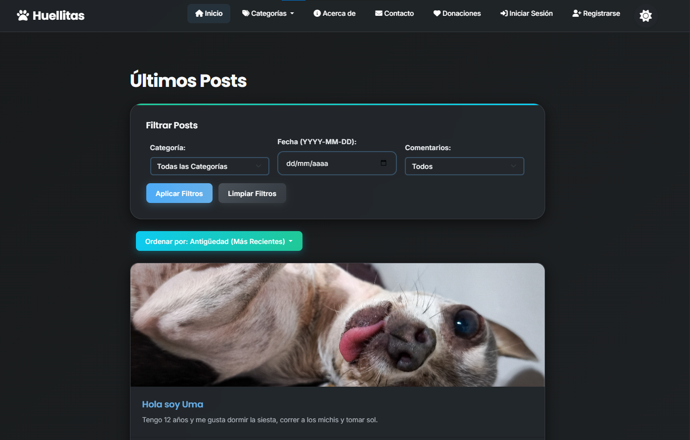

Blog de Noticias
Proyecto grupal de la etapa 2 del Informatorio realizado con el framework Django para la creación de un blog de noticias dinámico con funcionalidades CRUD completas.
Aprendiz de Desarrollo Web, me encuentro estudiando en el Informatorio y de manera autodidacta, buscando adquirir conocimientos en Frontend y Python y continuar mi camino en Data Analytics.
Soy una estudiante y desarrolladora principiante especializada en HTML, CSS y Python. Estoy en constante aprendizaje para expandir mis conocimientos, con un interés particular en el Análisis de Datos y el desarrollo web.
Mi objetivo es conseguir mi primer empleo en el mundo de la tecnología, donde pueda aplicar mis conocimientos y seguir creciendo profesionalmente en un ambiente colaborativo y desafiante.
Esta es una muestra los proyectos en los cuales estoy trabajando en el Informatorio y de manera particular, para desarrollar mis habilidades con los distintos lenguajes.
Proyecto grupal de la etapa 2 del Informatorio realizado con el framework Django para la creación de un blog de noticias dinámico con funcionalidades CRUD completas.
Una herramienta de escritorio desarrollada de forma autodidacta para mejorar la velocidad y precisión al escribir, con seguimiento de progreso y estadísticas detalladas.
Primer proyecto grupal del Informatorio Etapa 2. Un reproductor de música sencillo que muestra el uso efectivo de la librería Tkinter para crear interfaces de usuario intuitivas.
¿Te interesa mi perfil o tienes una oportunidad de empleo? No dudes en contactarme. Estoy abierta a nuevas oportunidades y colaboraciones.